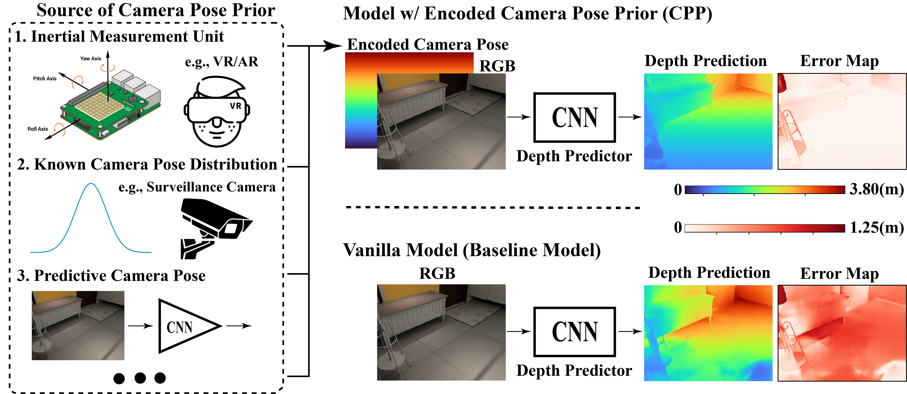
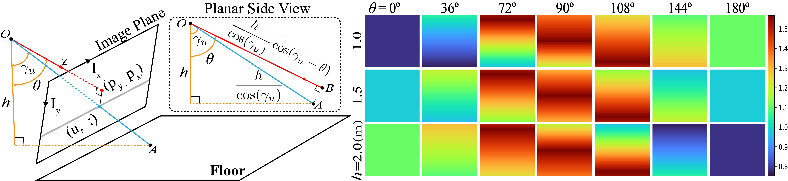

When Perspective Comes for Free:
Improving Depth Prediction with Camera Pose Encoding
Abstract
Monocular depth prediction is a highly underdetermined problem and recent progress has relied on high-capacity CNNs to effectively learn scene statistics that disambiguate estimation. However, we observe that such models are strongly biased by the distribution of camera poses seen during training and fail to generalize to novel viewpoints, even when the scene geometry distribution remains fixed. To address this challenge, we propose a factored approach that estimates pose first, followed by a conditional depth estimation model that takes an encoding of the camera pose prior (CPP) as input. In many applications, a strong test-time pose prior comes for free, e.g., from inertial sensors or static camera deployment. A factored approach also allows for adapting pose prior estimation to new test domains using only pose supervision, without the need for collecting expensive ground-truth depth required for end-to-end training. We evaluate our pose-conditional depth predictor (trained on synthetic indoor scenes) on a real-world test set. Our factored approach, which only requires camera pose supervision for training, outperforms recent state-of-the-art methods trained with full scene depth supervision on 10x more data.
Overview

We propose to exploit camera pose as prior conditioned on which we train the depth predictor. The camera pose can be from sensors or or estimated by camera pose predictors. We encode the camera pose as a 2D map that is concatenated with the image as input to a pose-conditional depth predictor. As seen in the prediction error map, by leveraging the pose prior CPP allows much better depth estimates compared to a vanilla baseline model that takes only RGB image as input.
Representing and Encoding Camera Pose Priors

We propose a factorized approach that disentangles viewpoint statistics from depth predictions. Specifically, we encode camera pose priors (CPP) as scene-independent spatial maps that are later concatenated with RGB images as input to pose-conditional depth predictors For more details, please refer to our paper linked above.
Citing this work
If you find this work useful in your research, please consider citing:
@article{zhao2020perspective,
title={When Perspective Comes for Free: Improving Depth Prediction with Camera Pose Encoding},
author={Zhao, Yunhan and Kong, Shu and Fowlkes, Charless},
journal={arXiv preprint arXiv:2007.03887},
year={2020}
}
Acknowledgements
This research was supported by NSF grants IIS-1813785, IIS-1618806, a research gift from Qualcomm, and a hardware donation from NVIDIA.